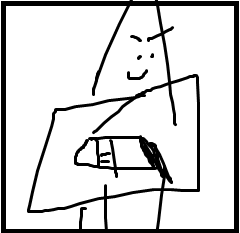

Vida: 100
Resistencia: 80
Ef. Pasivos: Disminuye la recarga en un 10% a personajes de tipos robots si se acercan a su radio (no acumulable, y una vez cada 60 sg).
Un zorro de dos colas, el mejor de su especie y un gran amigo, se destaca por su gran puntería, movilidad y apoyo tactico :D
Vida: 100
Resistencia: 80
Ef. Pasivos: Disminuye la recarga en un 10% a personajes de tipos robots si se acercan a su radio (no acumulable, y una vez cada 60 sg).
1-Volar: El clasico vuelo de Tails, ahora mas rapido y duradero. Si transporta uno o dos sobrevivientes la velocidad y duración se reducen en 2 por superviviente. Recarga: 50sg.

2-Disparo: Este disparo tiene cierto grosor y distancia, si se dispara inmediatamente aturde unos segundos y no empuja, si se carga no aturde pero empuja 20cm al exe, si se sigue cargando el cañon se sobrecarga y se deja de ser usado, aumentando la recarga de la habilidad en 5 sg, recarga (sin efectos negativos): 40sg.

3-¡Aqui va el "disparo"!: Recarga su cañon llenandose de energia por 5 sg, una vez cargado se crea una casi invisible circulo de electricidad, dura 20 sg antes de enfriarse, si el exe lo golpea es aturdido por 7sg y el cañon se recupera, si el exe no lo ataca el cañon se congela como metodo de proteccion al usuario, evitando dañar al usuario, pero congelando las demas habilidades por 40sg, recarga: 60sg.

LMS SPECIAL: Su segunda habilidad dura el doble, pero su layo laser tarda 5 sg mas en recargarse.